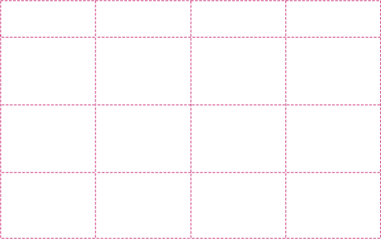
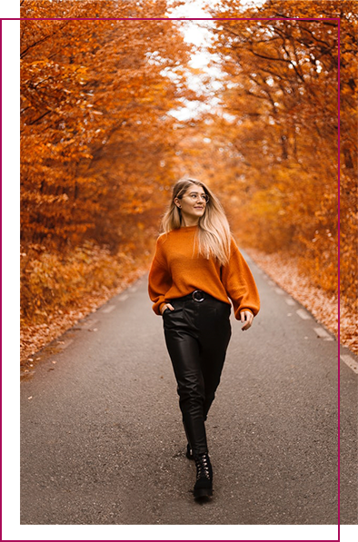
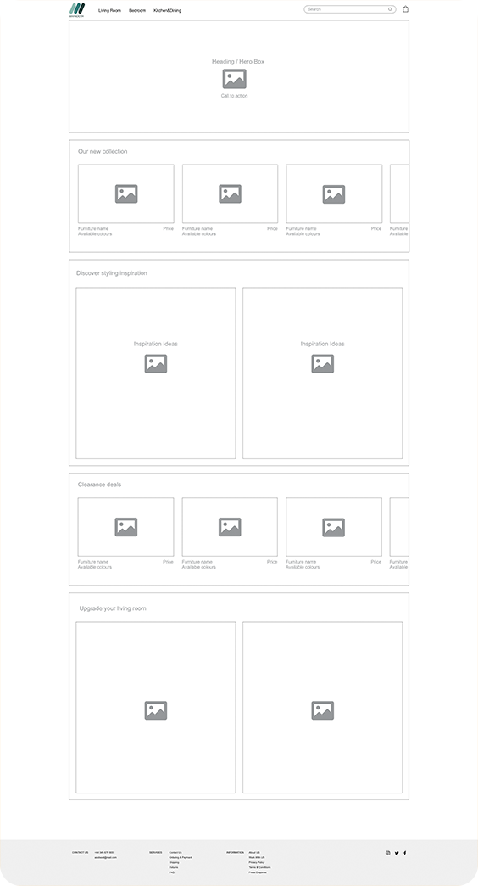
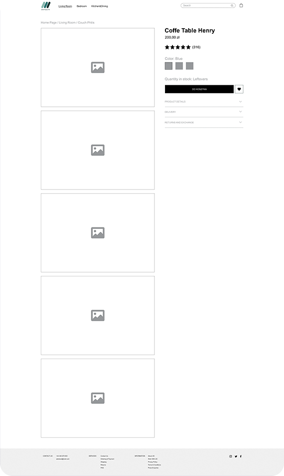
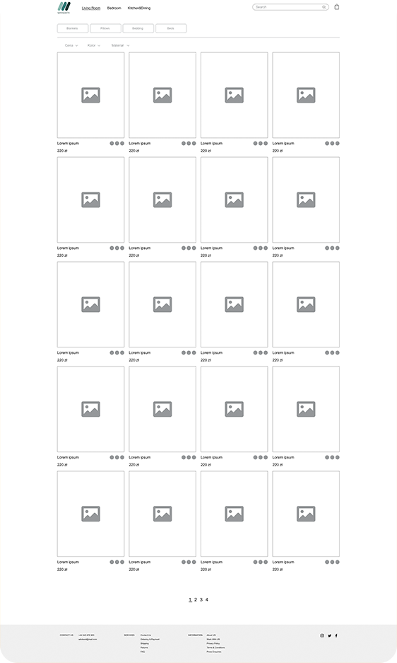
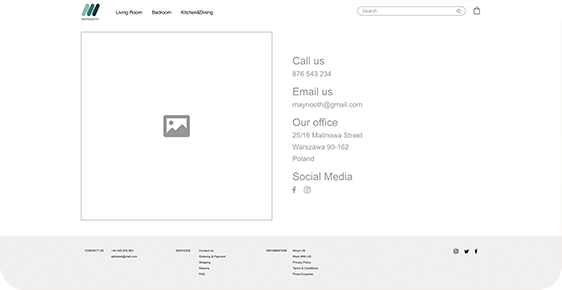
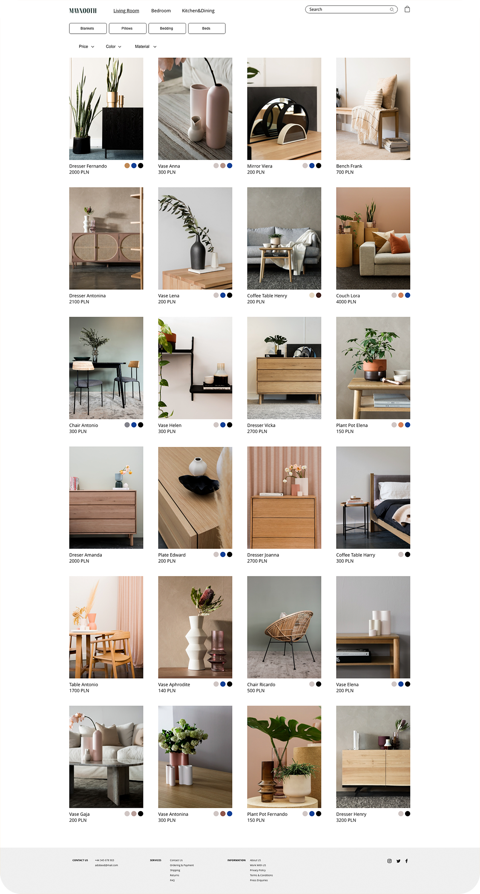
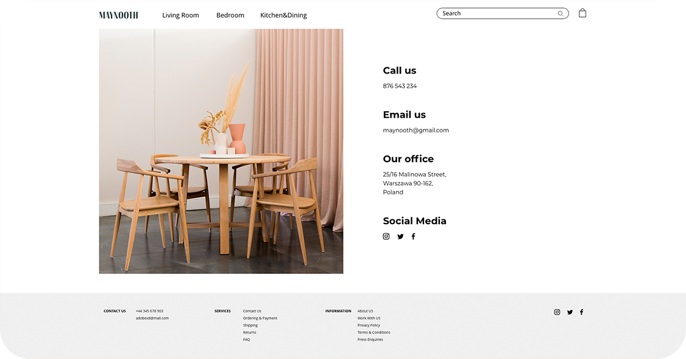
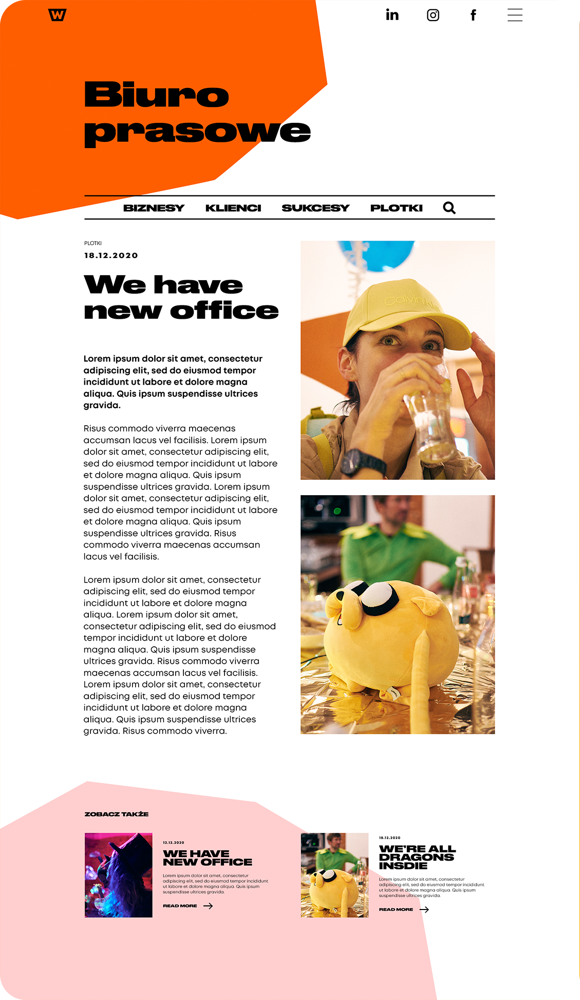
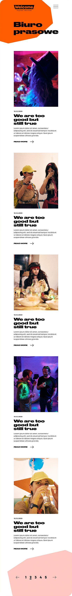

UI/UX PROJECTS
MAYNOOTH PROJECT
ABOUT PROJECT
Maynooth online store design is project which I made during the User Experience Design Essentials - Adobe XD, course with Daniel Scott.MY ROLE
I made an entire project from user research through prototyping to final UI design.RESULTS
High-fidelity mockup of online store for Maynooth brand.BRIEF
Designing online store for Maynooth brand which sells minimalistic furniture and decoration accessories. Motto of Maynooth brand is less is more. Their furniture is handcrafted and made from sustainable materials. Their design is simple, consistent and classic. Brand owners make every effort to ensure that their products and packaging are environmentally friendly. Smaller products of Maynooth brand are packed in ecological materials such as paper and paper tape and material which is used as a filler for the packages is made from starch and is easy to disposal by dissolving in water or composting. Brand owners take care also about their employees and for their work to be appropriately rewarded.THE CHALLENGE
Designing the website in a way, that it is aesthetic, useful, interesting for our persona and reflects the style of the Maynooth brand.ABOUT THE PROCESS
I have planned my work according to double diamond method. First phase of the project was dedicated for research and second for designing. The table on the right shows how my work was planned.


USER PERSONA
- Name: Zosia Anielak
- Age: 30
- Location: Lodz, Poland
- Job: Project manager in the creative agency
- Salary: 6K net monthly
ABOUT ZOSIA
Zosia is living with husband in rented flat, which she loves and designed by herself. They saved up money and have just bought their own apartment which needs to be furnish. They don’t have kids yet. Zosia is interested in design and trends. Her passion is pottery. She likes long-lasting products with simple and classily design. She can spend more on them. She takes care also about environment. She appreciates when products are made from sustainable materials and packed in easy to decomposing materials.LOW-FIDELITY PROTOTYPES
HOMEPAGE
PRODUCT PAGE
CATEGORY PAGE
CONTACT PAGE
HIGH-FIDELITY MOCKUP
HOMEPAGE

CATEGORY PAGE
PRODUCT PAGE

CONTACT PAGE
WELCOME PRESS AGENCY WEBSITE
ABOUT PROJECT
During my work at Welcome Digital Services, I have made a project for their press agency website.MY ROLE
I made an entire project.RESULTS
High-fidelity mockup of Welcome Press Agency Website.THE CHALLENGE
Designing website in a way that it’s design will be fresh but at the same time consistent with the Welcome visual identity.BRIEF
The project is about designing website for Welcome press agency. Welcome press agency website will be subpage for main welcome page. The aim of welcome press agency website is to gather all information about company and its clients. There will be needed three designs: design for main page with articles to browse, design for page with short article and design for page with long article. All designs will need to be responsive and this is why, there will be needed another three version for each of them for desktop, tablet and mobile.HIGH-FIDELITY MOCKUP
MAIN PAGE - DESKTOP VERSION

LONG ARTICLE PAGE - DESKTOP VERSION
SHORT ARTICLE PAGE - DESKTOP VERSION

MOBILE VERSION



REJS
ABOUT PROJECT
Project made for client - Rejs, company organising kayaking trips.MY ROLE
I made design of the website.RESULTS
Live Rejs company website. - www.splywwarkarejs.plTHE CHALLENGE
Designing website in a way that it’s design will be useful and aesthetic in the same time.BRIEF
Rejs is new company organizing kayaking trips. They needed responisive website to promote themselves and to have all, most important information about their offer in one place.final Rejs website can be seen on - www.splywwarkarejs.pl
TASTE ME APP
ABOUT PROJECT
For this project I designed screens for app with coupons for restaurants. Project made for client.MY ROLE
I made an entire project.RESULTS
High-fidelity mockup of Taste Me app.THE CHALLENGE
Designing app in a way that it will be aesthetic and useful.BRIEF
Taste me is an application that offers discount coupons for dinners at restaurants. Discounts can be booked for specific time.HIGH-FIDELITY MOCKUP